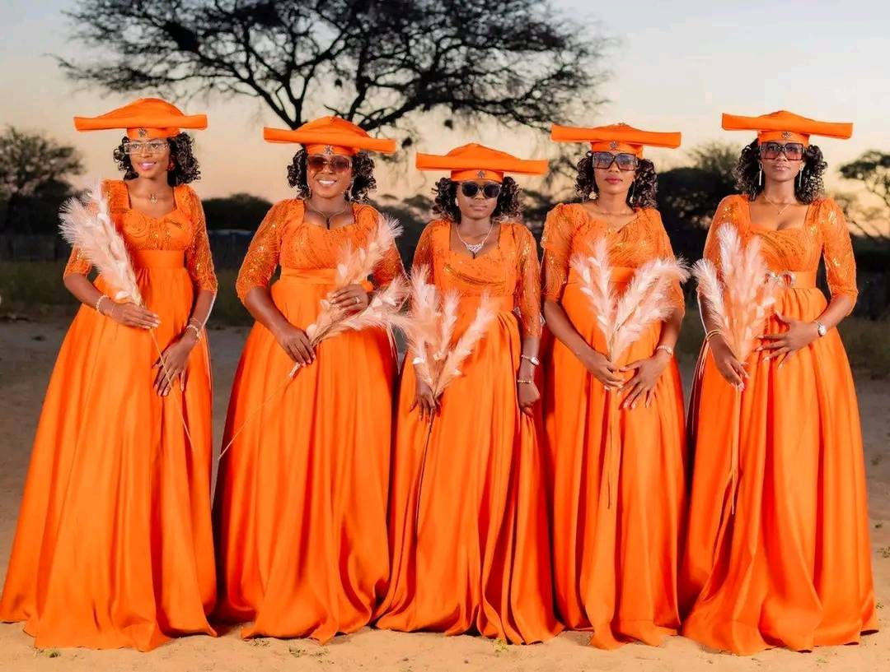
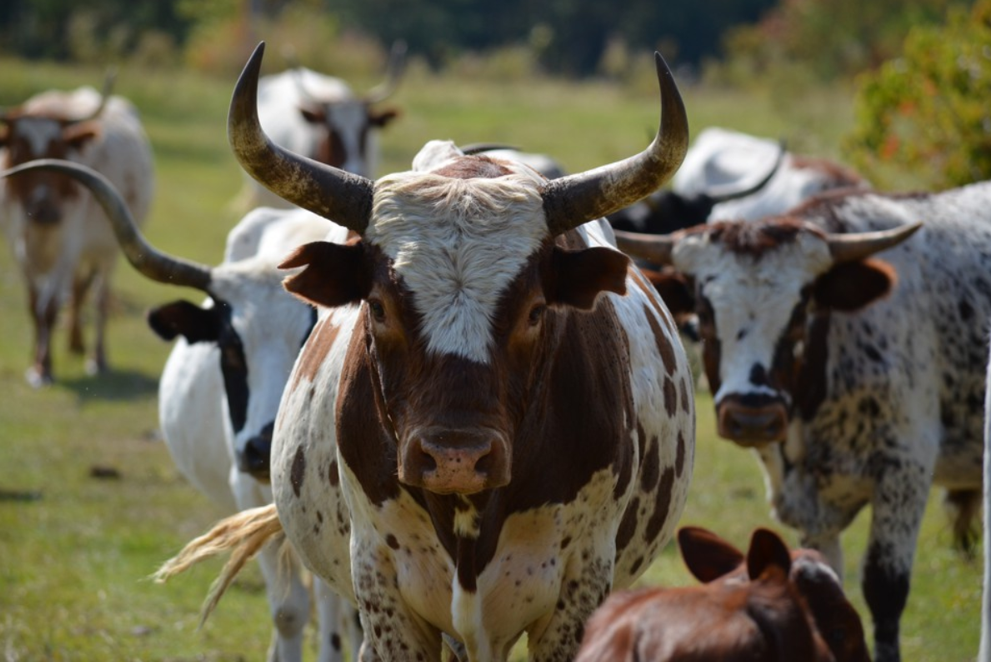

Herero Culture & Traditions
Herero culture includes traditional ceremonies, music, dance, dress and strong community values. These traditions are passed down through generations.
Traditional Dress
The Herero women are known for their Victorian-inspired, floo-length gown characterized by high necklines and multiple layers of petticoats called Ohorokova. It is paired with the horned headdress (Otjikaiva) which is the most iconic element shaped to resemble cow horns.

